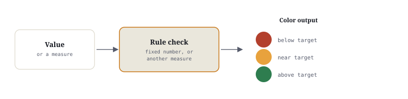

Color does the reading so the executive doesn't have to.
changes a visual's color, font, bar, or icon based on the value itself — the exact same trick as Excel's Conditional Formatting, just applied to a card, table, or matrix instead of a spreadsheet range. A busy VP shouldn't have to read 40 rows of a table to find the one that's a problem. Color should find it for them.
Where the dialog lives
Conditional formatting is set per-field, on a table, matrix, or card-style visual — not on the visual as a whole. There are two doors into the same dialog:
fx
Both paths open the same dialog box. The field dropdown is faster once you know a field needs formatting; the Format pane's Cell elements section is where you go to see — or turn off — every rule already applied to a visual.

The formatting types
All seven live in the same dialog, under a "Format style" dropdown. Click any card for steps and an example.
Background color rules
Concept: Fills the entire cell background with a color determined by that cell's value — either a smooth gradient across the range, or a fixed color once a value crosses a threshold.
Real-world example: A Profit table where every negative-profit row gets a solid red cell background — impossible to scroll past without noticing.
Steps
- Click the field's ▾ in the Values well → Conditional formatting → Background color
- Format style: Gradient (gradient across the range) or Rules (fixed color bands)
- Pick the field the color should be BASED ON — usually the same field, but it doesn't have to be
- Apply
Best practice: Keep the fill readable — dark backgrounds need a light font color or the number disappears into its own cell.
Font color rules
Concept: The same rule engine as Background color, but it recolors just the text — the cell itself stays the table's normal background.
Real-world example: A dense Sales table where only the number turns red for a below-target row, keeping the table visually quiet everywhere else — useful when a full-cell fill would feel too loud for a page with many other colored elements.
Steps
- Field's ▾ → Conditional formatting → Font color
- Same Gradient / Rules choice as Background color
- Apply
Best practice: Use Font color instead of Background color when a table already has other color elements (icons, data bars) and a full cell fill would start to compete with them.
Data bars
Concept: A small in-cell horizontal bar, drawn behind the number, sized relative to the column's minimum and maximum — a miniature bar chart living inside a table cell.
Real-world example: A Regional Sales table where every row shows both the exact number AND a bar — so North's bar visibly dwarfs West's, without building a separate chart.
Steps
- Field's ▾ → Conditional formatting → Data bars
- Set Minimum and Maximum (leave on "Automatic" to use the column's own lowest/highest value)
- Optionally turn off "Show bar only" if you want the bar with no number at all — usually leave it off so the exact figure stays visible
- Apply
Best practice: Data bars are the fastest way to make a plain table feel like a chart without leaving the table visual — reach for them before building a separate bar chart next to it.
Icons
Concept: A small icon placed next to the value — arrows (up/flat/down), traffic lights (red/yellow/green circles), or stars — chosen from a preset icon set based on which threshold band the value falls into.
Real-world example: A KPI table where every metric gets a traffic-light icon: green circle for on-target, yellow for close, red for missed — readable from across a conference room, before anyone reads a single digit.
Steps
- Field's ▾ → Conditional formatting → Icons
- Pick an icon set (arrows, traffic lights, ratings, etc.)
- Set the thresholds for each icon band, and where the icon sits (Left of value is the default)
- Apply
Best practice: Traffic lights read fastest for status (good/warning/bad); arrows read fastest for direction of change (up/down vs. last period). Pick the set that matches the QUESTION, not just what looks nice.
Rules-based formatting
Concept: Explicit if/then bands you define yourself — "if value < 10 then red," "if value is between 10 and 20 then yellow," "if value > 20 then green" — instead of a smooth gradient. Available under the Rules format style for Background color, Font color, and Icons alike.
Real-world example: "If Profit Margin % < 10% then red background" — a hard line a finance team actually uses to flag a product for review, not a vague "redder = worse" gradient.
Steps
- Field's ▾ → Conditional formatting → Background color (or Font color / Icons)
- Format style: Rules
- Click "+ New rule" for each band, setting the comparison ("is less than," "is between," etc.) and the color for that band
- Apply
Best practice: Reach for Rules whenever the business already has a named threshold ("below 10% margin is a problem") — a gradient can't express a hard line the way an explicit rule can.
Color scales
Concept: A continuous gradient from one color to another (often through a middle color) spread smoothly across the field's full range — the "Gradient" format style, as opposed to the hard bands of Rules-based formatting.
Real-world example: A Profit Margin column shaded on a red → yellow → green gradient — a 4% margin renders as a deep red cell, an 11% margin as a pale yellow-green, a 22% margin as a solid green, with every value in between shaded proportionally, not sorted into three flat buckets.
Steps
- Field's ▾ → Conditional formatting → Background color
- Format style: Gradient
- Set Minimum color, (optional) Center color, and Maximum color
- Apply
Formatting by a measure, not the raw column
Concept: Every dialog above has a "Based on field" dropdown — and it does NOT have to be the same field being displayed. You can color one visible value using an entirely different, independently calculated .
Why it matters: A raw Sales number, on its own, has no opinion about whether it's good or bad — 4.2 million could be a triumph or a disaster depending on what it's being compared to. A separate measure can carry that comparison (e.g. Sales vs Target %), and the KPI card showing raw Sales can borrow that measure's verdict for its color, without displaying the measure itself anywhere on the page.
Real-world example: A "Total Sales" card shows ₹42.8L in plain black-on-white — a perfectly correct number that tells a viewer nothing about whether it's a good month. Point its Background color rule at a hidden Sales vs Target % measure instead of at Sales itself, and the exact same card turns green when the number is ahead of target and red when it's behind — the visible number never changes, only what decides its color does.
Steps
- Write the DAX measure first — e.g.
Sales vs Target % = DIVIDE([Total Sales] - [Target Sales], [Target Sales]) - Select the visual → field's ▾ → Conditional formatting → Background color (or Font color / Icons)
- In "Based on field," change it from the displayed field to the new measure
- Set the rule/gradient against the MEASURE's range (e.g. below 0% = red), not the displayed number's range
Thresholds — fixed number vs. a field that defines it
Fixed threshold
A hard-coded number typed straight into the rule — "if value < 10 then red." Simple, and correct for a genuinely fixed business line.
Example: A hospital compliance rule of "on-time discharge = processed within 5 days" that regulators define once and don't change often.
Weakness: if the threshold ever needs to change, someone has to reopen the dialog and edit the rule by hand, on every visual that used it.
Dynamic threshold (a field or measure)
The cutoff itself comes from data — a Target column, or a measure like [Target Sales] — instead of a number typed into the dialog.
Example: Each region has its own Target Sales value; a single "Sales vs Target %" measure divides actual by that region's own target, so the SAME rule correctly flags North against North's goal and South against South's — no per-region rule needed.
Strength: update the underlying Target data and every visual using that measure re-evaluates automatically — nobody touches the formatting rule itself.
Try it — same number, colored by a different measure
Four region KPI cards below all show Total Sales — the number never changes. What changes their color is a separate, hidden measure: Sales vs Target %, using fixed Rules-based thresholds (below 0% = red, 0–5% = amber, above 5% = green). Click a month to simulate a data refresh and watch the SAME cards recolor as the underlying measure moves — nothing about how Sales itself is displayed changes.
Each card's badge shows the hidden measure driving its color — that measure is never displayed as its own visual, only used to decide red / amber / green.
Highlighting exceptions — the actual point
Every technique above is in service of one analytical goal: a viewer should be able to glance at a table of 50, 200, or 2,000 rows and instantly know which handful need attention — without reading every single number. That's not a formatting nicety, it's the difference between a report someone actually uses every morning and one they open once and never trust again.
Five business examples
| Scenario | Before (no formatting) | After (conditional formatting) |
|---|---|---|
| Revenue vs. target Sales dataset, by Region |
A plain number per region — a viewer has to already know each region's target from memory to judge it. | Background color Rules on a Sales vs Target % measure — green above target, red below. on target behind |
| Profit margin Sales dataset, Profit ÷ Sales |
A column of percentages, all the same plain black text — a 3% margin and a 30% margin look equally routine. | Color scale (Gradient), red low → green high, so the eye sorts the whole column by shade before reading a single number. |
| SLA / turnaround time Hospital dataset, Admission Date → Discharge Date |
A Length-of-Stay column of raw day counts — nothing marks which admissions blew past an acceptable turnaround. | Icons (traffic light) driven by a % Within SLA measure — e.g. discharged within 5 days = green, 6–7 = yellow, 8+ = red — flags exactly which patients' stays ran long. |
| Data quality scores callback to Power Query |
A cleaned table looks uniformly trustworthy — but some rows started with 4 issues fixed automatically and some with none; that history is invisible after the fact. | Rules-based background color on an "Issues Fixed" count column — 0 issues plain, 1–2 amber, 3+ red — so a reviewer can spot-check the rows that needed the most repair, exactly the trims/typos/blanks covered on the Power Query page. |
| Regional performance Sales / Retail dataset, Region column |
A table of Region + Sales — comparing four numbers means reading each one and doing the ranking in your head. | Data bars on the Sales column — North's bar visibly dwarfs West's at a glance, no mental math required. |
Common mistakes
Formatting everything
Conditional formatting on every single column turns a table into a rainbow with no clear signal — reserve it for the 1–3 fields that actually drive a decision.
Red/green with no legend
A viewer new to the report has no way to know red means "below target" versus "above budget" versus something else — a one-line caption or consistent site-wide convention (red = bad) removes the ambiguity.
Coloring the raw value when the verdict lives elsewhere
Leaving "Based on field" pointed at the same displayed column means the color can only ever reflect that number's own size — not whether it's actually good, which usually depends on a target or comparison the raw value alone can't express.
Hard-coding a threshold that varies by group
Typing one fixed number when the real cutoff differs by region, department, or product silently misjudges every group whose true target isn't that number — a measure-based threshold fixes this once, everywhere.
Exercise
Banking dataset — flag the risky loans
Build a Table of Banking[Customer, Loan Amount, Credit Score, Status]. Apply a color scale to Credit Score (red low, green high), and a rules-based background color to Loan Status (red for "Rejected," green for "Approved"). Which rows would a credit officer look at first?